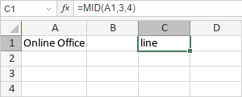

MID/MIDB funkcija
MID/MIDB funkcija je jedna od funkcija za tekst i podatke. Koristi se za izdvajanje karaktera iz zadatog niza počevši od bilo koje pozicije. MID funkcija je namenjena jezicima koji koriste jedno-bajtni skup karaktera (SBCS), dok je MIDB namenjena jezicima koji koriste dvobajtni skup karaktera (DBCS) poput japanskog, kineskog, korejskog itd.
Sintaksa
MID(tekst, start_broj, broj_karaktera)
MID funkcija ima sledeće argumente:
| Argument | Opis |
|---|---|
| tekst | Niz iz kojeg želite da izdvojite karaktere. |
| start_broj | Pozicija sa koje počinjete izdvajanje. |
| broj_karaktera | Broj karaktera koje želite da izdvojite. |
MIDB(tekst, start_broj, broj_bajtova)
MIDB funkcija ima sledeće argumente:
| Argument | Opis |
|---|---|
| tekst | Niz iz kojeg želite da izdvojite karaktere. |
| start_broj | Pozicija sa koje počinjete izdvajanje. |
| broj_bajtova | Broj karaktera koje želite da izdvojite, zasnovano na bajtovima. |
Napomene
Kako primeniti MID/MIDB funkciju.
Primeri
Slika ispod prikazuje rezultat koji vraća MID funkcija.
